Can I come to your house?
In a study of U.S. time diaries, the share of 15–18-year-olds who spent any time with friends on a given day fell from 38.5% in May–December 2019 to 19.4% in the same months of 2020.
The pandemic interrupted the ordinary act of seeing a friend. In a March 2020 survey of U.S. adolescents, 53.5% said they had spent no time with friends in person in the previous seven days. The time-diary study found that average daily time with friends also fell from 80 to 58 minutes later that year.
Sources: American Time Use Survey analysis (2022)JAMA Pediatrics, U.S. adolescent survey (2020)
To answer the question, we brainstormed some common and natural scenarios for teenagers to gather offline. One of them is the high school band. However, as low-barrier as it seems, forming a band requires people with instrument experience, love and passion for a certain type of music, and, of course, a stage to perform on. But we are competing for attention from teenagers with personalized flytraps such as TikTok. How are we going to achieve this? Dance with some famous real-life antagonists' memes or a fart?
Yeah. That's where we are going.
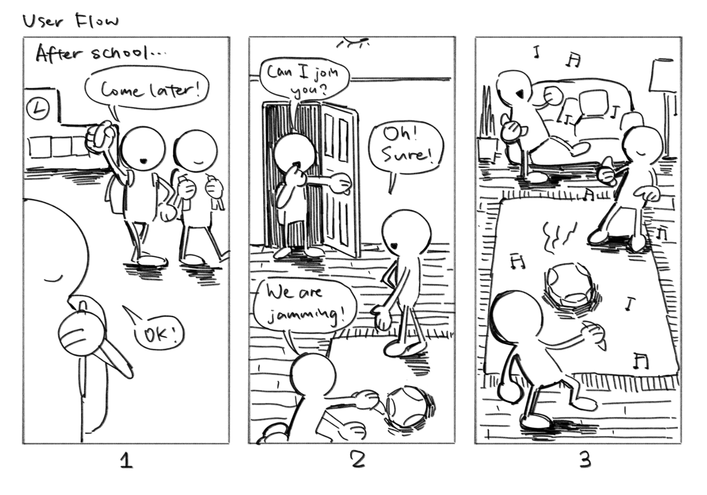
The Play
How do you play this instrument? Our requirement was simple: the entry point had to be low enough for an ordinary human to start, while the ceiling had to be high enough for it to stay a real creative tool after the first five minutes.
We looked at existing instruments. The theremin caught our attention because its player seems to make music in the air. The movement is visible, almost like a dance. It felt right for JamSesh to be played in the air.
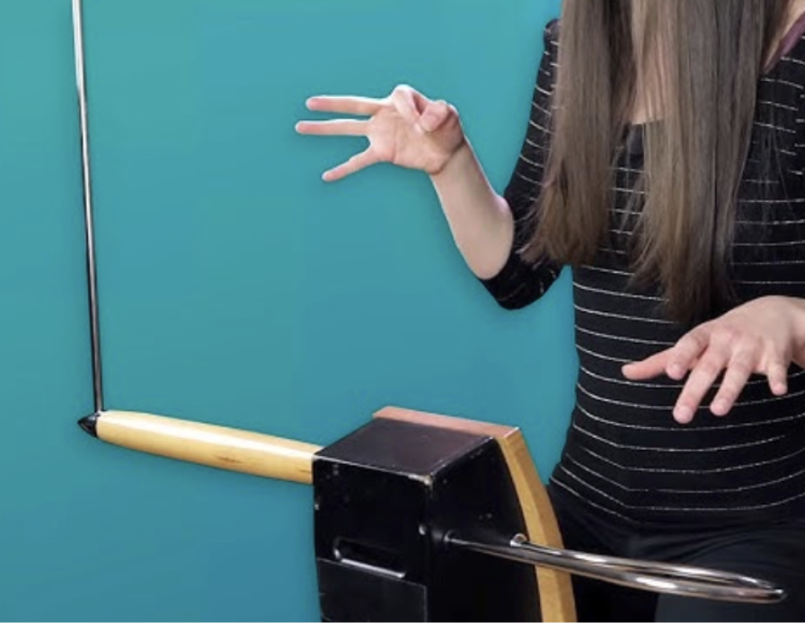
We gave players three ways to change a sound.
Rhythm
Start with one short recorded sound. It could be a violin note in C major. It could also be a fart. Scrolling the wheel will select the note, and pressing the large button will play the note.
Pitch
Tilting the handheld changes the pitch of the selected sound. A gyroscope reads the angle, and software remaps the sample.
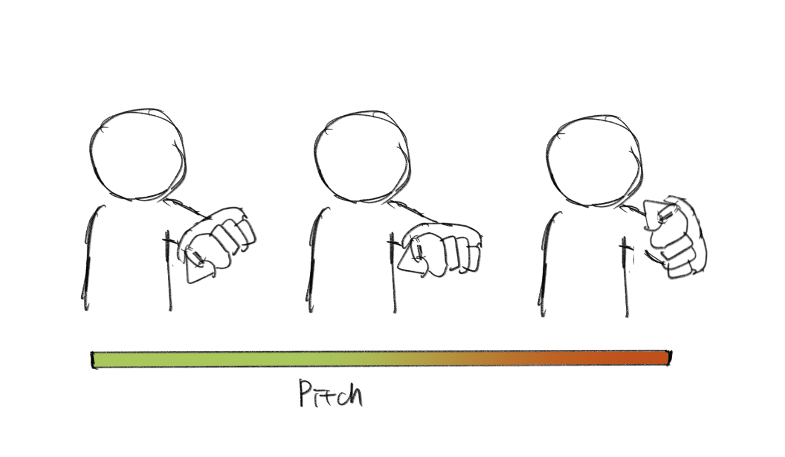
Volume
Move closer to another player and the sound gets louder. Move apart and it gets quieter, like proximity chat in a game. The spatial position matters, adding more fun to the game.
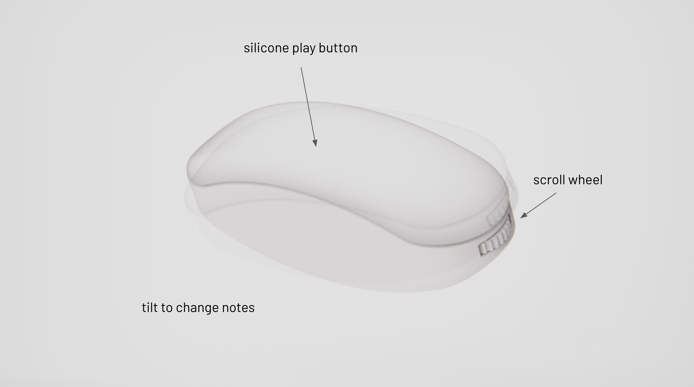
Our presentation documents an ESP32-C6 input and Bluetooth prototype, with Python and pydub used to remap the pitch of a sample. The diagrams show the intended mapping of movement, button presses, and proximity to sound.
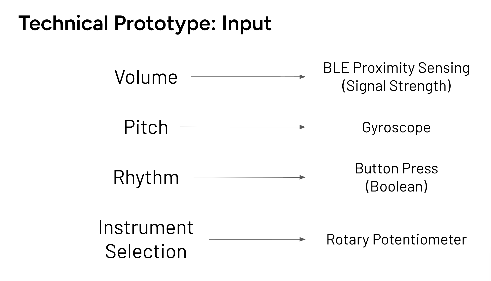
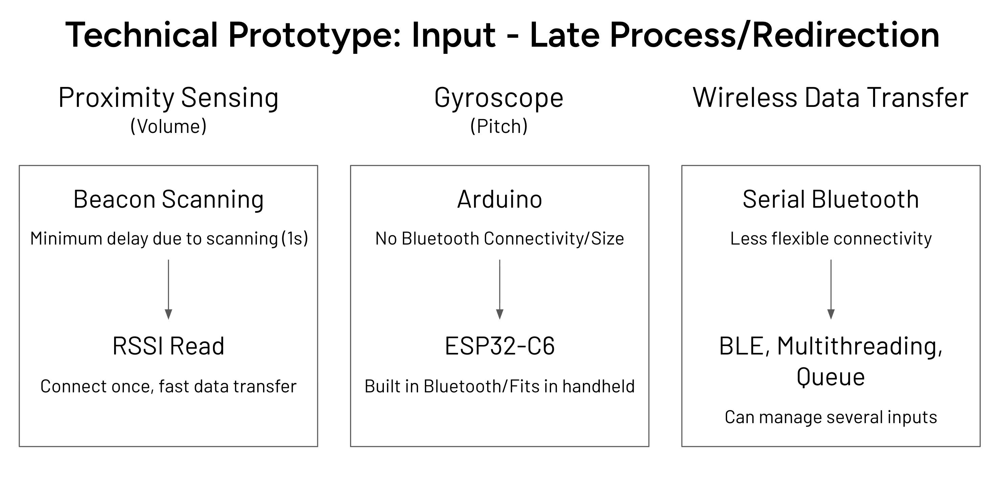
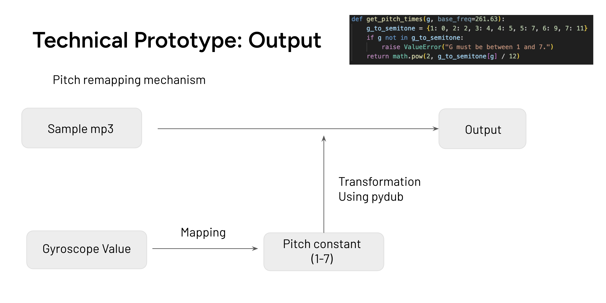
The Product
We began with sketches of the handheld, minimizing friction. We also explored CAD in a relatively early stage.
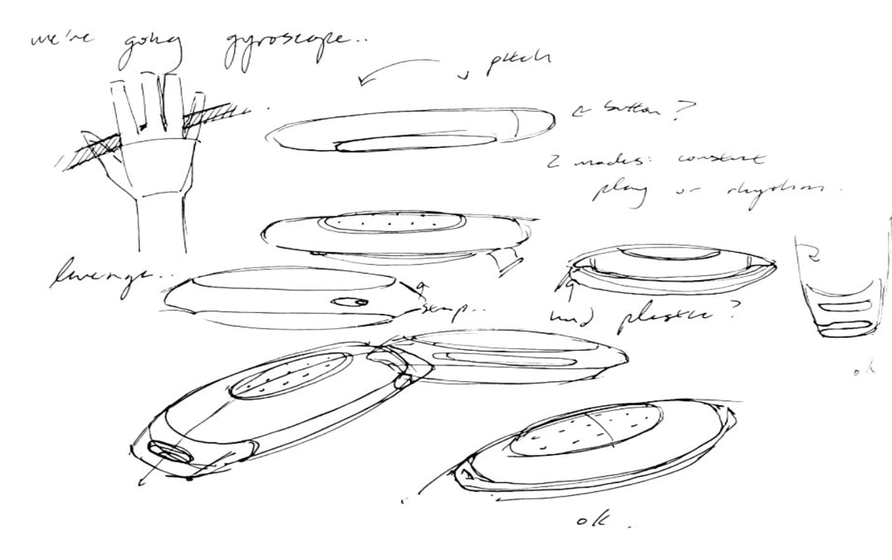
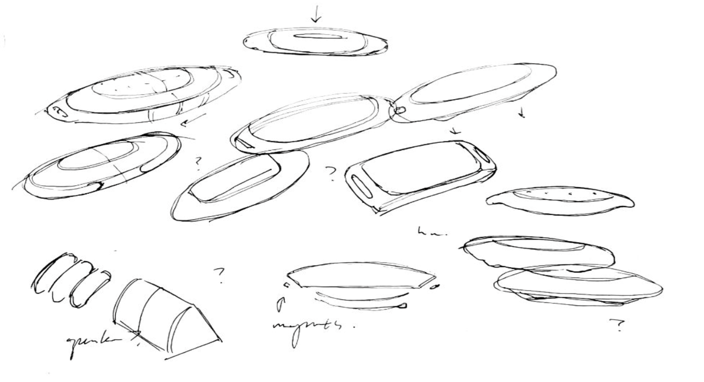
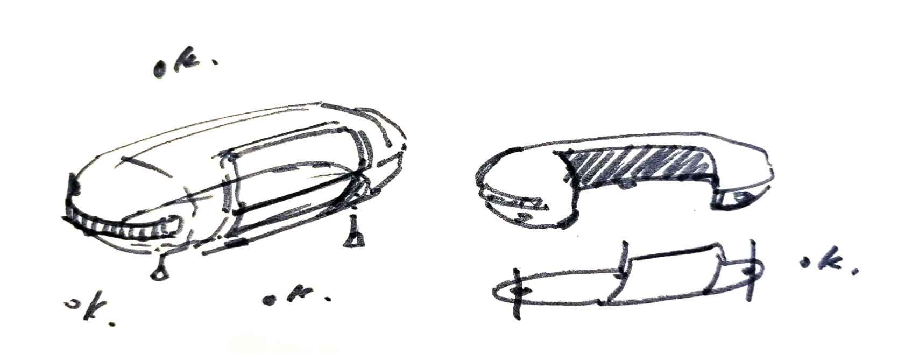
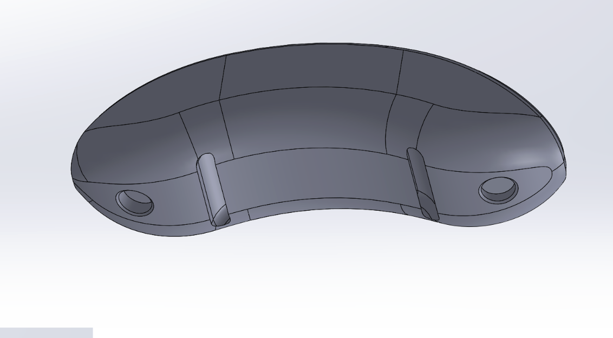
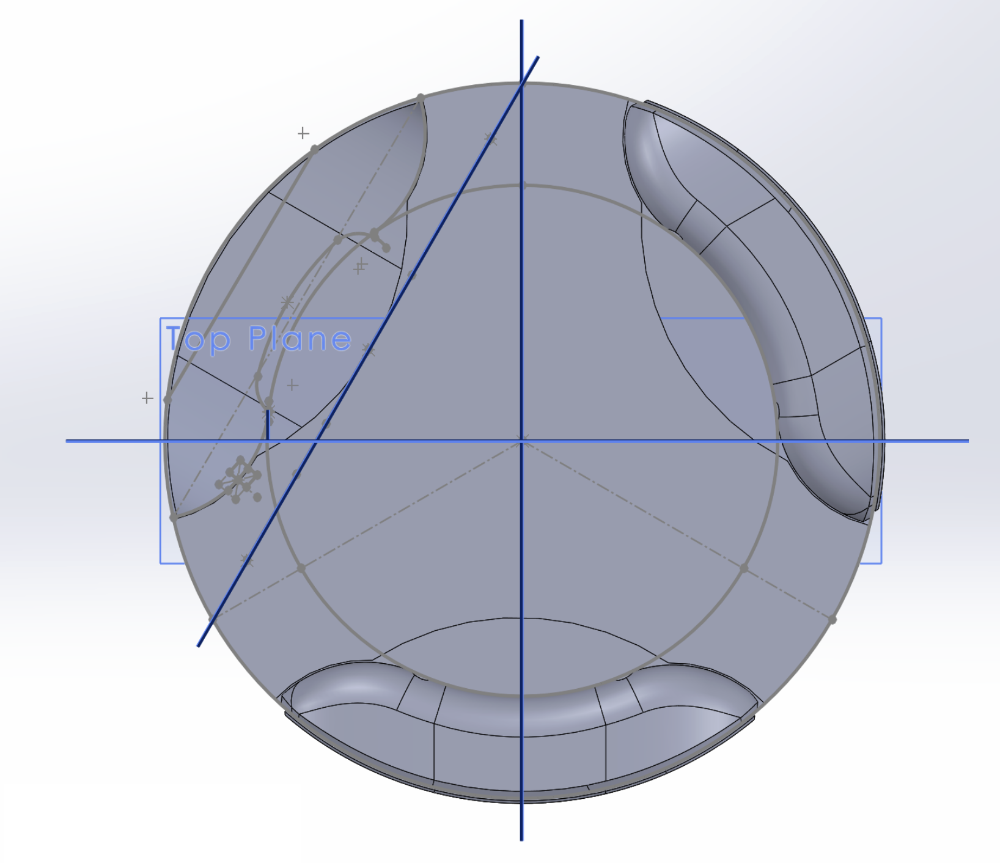
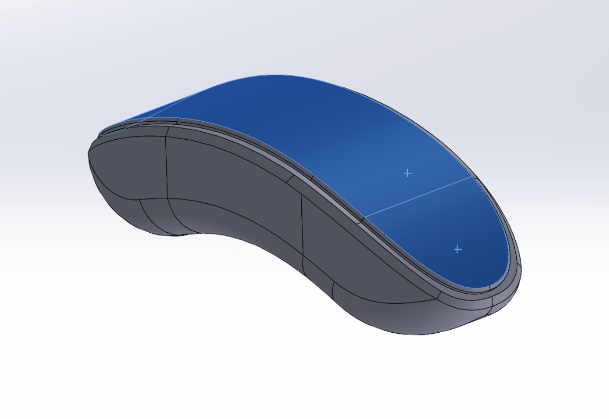
The final proposal pairs several handhelds with a shared speaker. The speaker gives everyone one sound source and shows which sound is selected. The handhelds attach to it for storage and charging. We also proposed a microphone and record button for adding new sounds; the technical prototype in the presentation uses prepared samples.